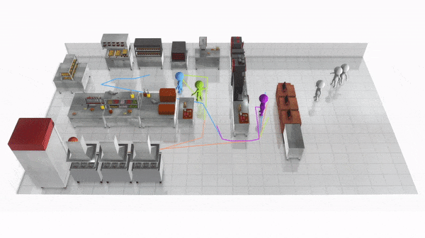
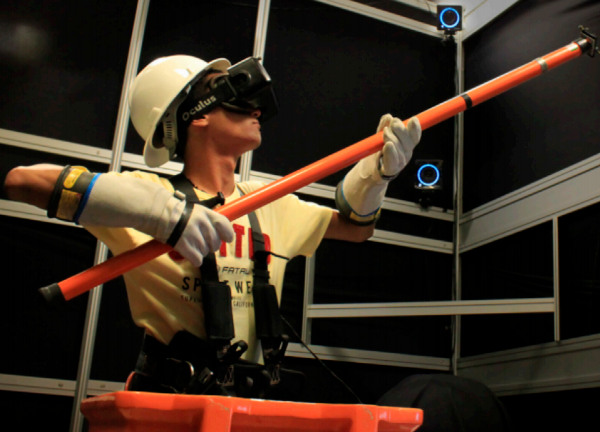

|
CS PhD student in George Mason University Currently, I am working at the Design Computing and eXtended Reality (DCXR) group with my advisor Prof. Craig Yu. My research interests include VR, computational design and HCI, particularly on the applying computational technique and artificial intelligence techniques for creating personalized virtual experience and scenes. My research has been published in IEEE VR and ACM CHI; and was recognized with a Best Paper Honorable Mention Award at CHI 2019. Email: yzhang59@gmu.edu |
 |
Publication |
|  | Joint Computational Design of Workspaces and Workplans Yongqi Zhang, Haikun Huang, Erion Plaku, Lap-Fai Yu Computational design for workplaces. Layout Design| Computational Design| Personalization ACM Transactions on Graphics (Proceeding of SIGGRAPH Asia 2021) Project Page | Paper| Video | | Bibtex |
|  | A Review on Virtual Reality Skill Training Applications Biao Xie, Huimin Liu, Rawan Alghofaili,Yongqi Zhang ,Yeling Jiang, Flavio Destri Lobo,Changyang Li, Wanwan Li, Haikun Huang, Mesut Akdere, Christos Mousas, Lap-Fai Yu Virtual Reality technology for different training application. Virtual Reality, Training| Simulation| Content creation | Personalization Frontiers in Virtual Reality, 2021 Project Page | Paper | Bibtex |
| Toward Automatic Audio Description Generation for Accessible Videos Yujia Wang, Wei Liang, Haikun Huang,Yongqi Zhang, Dingzeyu Li, Lap-Fai Yu Audio Description Generation for Accessible Videos and Survey. Human-centered computing | Accessibility systems Proceedings of the ACM Conference on Human Factors in Computing Systems (CHI 2020) Project Page | Paper | Video | Bibtex |
 |
Exertion-Aware Path Generation *Wanwan Li, *Biao Xie, Yongqi Zhang, Walter Meiss, Haikun Huang, Lap-Fai Yu *Equal contributors Generating exertion-aware paths over 3D terrains for VR exercising. Procedural Modeling | Level Design | Path Generation | Haptics ACM Transactions on Graphics (Proceeding of SIGGRAPH 2020) Project Page | Paper | Video | Bibtex |
 |
Pose-Guided Level Design *Yongqi Zhang, *Biao Xie, Haikun Huang, Elisa Ogawa, Tongjian You, Lap-Fai Yu *Equal contributors Procedural game level generator for motion/exercise games (e.g., Just Dance, Speed of Light). Level Design | Optimization | Exergaming | Generative Designv Proceedings of the ACM Conference on Human Factors in Computing Systems (CHI 2019) CHI 2019 Honourable Mentions Award Project Page | Paper | Video | Bibtex |
| Exercise Intensity-driven Level Design Biao Xie*, Yongqi Zhang*, Haikun Huang, Elisa Ogawa, Tongjian You, Lap-Fai Yu *Equal contributors This work automatically synthesizes realistic spatial sounds for 360° panorama images for delivering immersive VR experiences. Level Design | Optimization | Exergaming | Generative Design IEEE Transactions on Visualization and Computer Graphics (TVCG), 2018 (Special Issue on IEEE Virtual Reality 2018) In IEEE Transactions on Visualization and Computer Graphics, vol. 24, no. 4, pp. 1661-1670, April 2018.doi: 10.1109/TVCG.2018.2793618 (Special Issue on IEEE Virtual Reality 2018. Acceptance Rate: 15%) Featured on IEEE Xplore Innovation Spotlight Project Page | Paper | Video | Bibtex |
Honors & Awards |
Services |
|
|
In the Press |